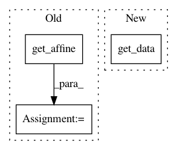

b28f80346270231ff2ef253af7ef4c5cd37f0916,plot_localizer_mass_univariate.py,,,#,26
Before Change
// Use the structural image of one subject as a background image
resampled_anat = resample_img(
dataset_files.anat[0],
target_affine=nibabel.load(dataset_files.cmaps[0]).get_affine(),
target_shape=neg_log_pvals_bonferroni_unmasked.shape)
structural_data = resampled_anat.get_data()
// Various plotting parameters
picked_slice = 35 // plotted slice
vmin = -np.log10(0.1) // 10% corrected
After Change
// Plot thresholded F-scores map
ax = grid[0]
p_ma = np.ma.masked_less(neg_log_pvals_bonferroni_resampled.get_data(), vmin)
ax.imshow(np.rot90(structural_img.get_data()[..., picked_slice]),
interpolation="nearest", cmap=plt.cm.gray)
ax.imshow(np.rot90(p_ma[..., picked_slice]), interpolation="nearest",
In pattern: SUPERPATTERN
Frequency: 3
Non-data size: 3
Instances
Project Name: nilearn/nilearn
Commit Name: b28f80346270231ff2ef253af7ef4c5cd37f0916
Time: 2014-03-31
Author: virgile.fritsch@gmail.com
File Name: plot_localizer_mass_univariate.py
Class Name:
Method Name:
Project Name: nilearn/nilearn
Commit Name: 9223931ed397589ce58178461634313012e16e60
Time: 2014-02-17
Author: virgile.fritsch@gmail.com
File Name: plot_haxby_mass_univariate.py
Class Name:
Method Name:
Project Name: nilearn/nilearn
Commit Name: 4d651b16bab2d31b8d0d172a285406195a3845bf
Time: 2014-04-22
Author: gael.varoquaux@normalesup.org
File Name: plot_canica_resting_state.py
Class Name:
Method Name: